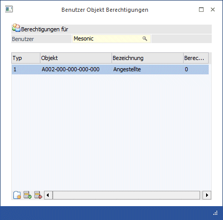
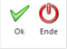

Über den Menüpunkt
1 Stammdaten
1 Benutzer Objekt Berechtigungen
können für einzelne Benutzer Berechtigungen für unterschiedliche Objekte vergeben werden.

Zuerst muss im Feld
Ø Benutzer
der Benutzer ausgewählt werden, für den Berechtigungen vergeben werden sollen. Über die Matchcodefunktion bzw. über die Autovervollständigung kann nach allen bereits angelegten Benutzern gesucht werden.
Hinweis
Es können hier nur solche Benutzer eingetragen werden, bei denen in der Benutzerverwaltung (WinLine ADMIN) der aktuelle Mandant und auch eine AN-Nr. aus diesem Mandanten hinterlegt sind. Außerdem macht die Hinterlegung nur dann Sinn, wenn der Benutzer keine Berechtigung hat, auf den WinLine LOHN zuzugreifen.
In der Tabelle können dann noch folgende Optionen hinterlegt werden:
Ø Typ
Aus der Auswahllistbox kann der Objekt-Typ ausgewählt werden, für den eine Berechtigung erteilt werden soll. Derzeit steht hier nur der Typ "Arbeitnehmergruppen" zur Auswahl.
Ø Objekt
In dieser Spalte kann das Objekt selbst - in dem Fall die Arbeitnehmergruppe - hinterlegt werden, für den der Benutzer die Berechtigung erhalten soll. Durch Drücken der F9-Taste kann nach allen vorhandenen Arbeitnehmergruppen (Objekten) gesucht werden.
Ø Bezeichnung
In dieser Spalte wird die Bezeichnung des Objektes (Arbeitnehmergruppe) angezeigt.
Ø Berechtigung
In dieser Spalte kann auch noch die Art der Berechtigung ausgewählt werden. Diese Funktion wird derzeit noch nicht unterstützt.
Buttons in der Tabelle
Ø Neu
Durch Anklicken des "Neu"-Buttons bzw. durch Drücken der Tastenkombination ALT+N kann eine neue Zeile in der Tabelle erzeugt werden, wobei die Zeile nach den bestehenden Zeilen angefügt wird.
Ø  Einfügen
Einfügen
Durch Anklicken des "Einfügen"-Buttons wird eine neue Zeile in die Tabelle eingefügt, wobei die Zeile, auf der der Focus steht, nach unten verschoben wird.
Ø  Entfernen
Entfernen
Durch Anklicken des "Entfernen"-Buttons kann eine bestehende Zeile gelöscht werden.
Buttons

Ø OK
Durch Drücken des Buttons "Ok" bzw. der Taste F5 werden alle Einstellungen gespeichert. Die Einstellungen für die Arbeitnehmergruppen derzeit haben nur Auswirkungen für die Arbeitnehmer-Info im WinLine INFO.
Ø Ende
Durch Drücken des Buttons "Ende" bzw. der ESC-Taste wird das Fenster geschlossen, vorgenommene Änderungen gehen verloren.